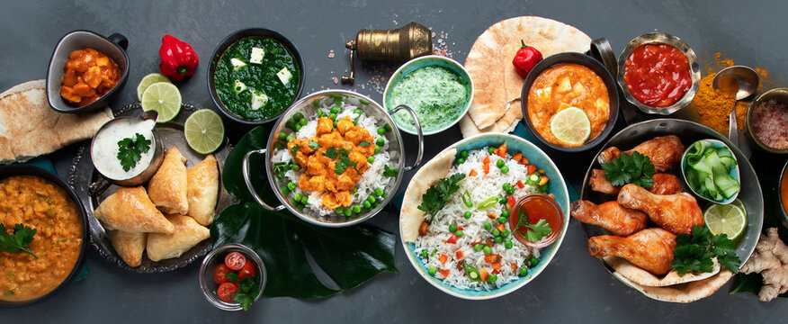

Welcome to Pakistani Cuisine Recipe Blog
Explore the flavors of Pakistan with our delicious recipes!
Popular Recipes
| Recipe | Ingredients | Instructions |
|---|---|---|
| Biryani | Rice, Chicken, Spices | Cook rice and chicken separately, then mix with spices |
| Karahi | Meat, Vegetables, Spices | Cook meat and vegetables in a karahi pan with spices |
| Tandoori Chicken | Chicken, Yogurt, Spices | Marinate chicken in yogurt and spices, then cook in a tandoor |
About Us
We're a team of food enthusiasts passionate about Pakistani cuisine.
